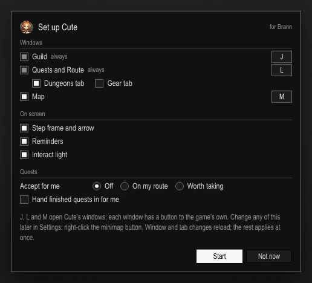

The guild's own addon.
For Forever's November release: the guild on J, your quests and route on L, Cute's map on M.
Download Cute 0.9.0, 1664 KB
Cute with the uploader Windows, 1706 KB
Free, GPL, no accounts. Cute alone sends nothing to any server: your guild sees what its officers allow, your party your level and quest steps (Settings, Data you share); the uploader sends foreverrank.com what you find in the world, never a name.
J, L and M


Install
- Download Cute.zip (or, on Windows, Cute-Uploader.zip, the same with the uploader beside it) and unzip it. You get two folders,
CuteandCute_Quest. Windows' Extract All puts them inside one more folder named after the zip: take the two out of it, or the game will not find them. - Put both in
Interface\AddOns, next to your other addons, so the game findsInterface\AddOns\Cute\Cute.tocandInterface\AddOns\Cute_Quest\Cute_Quest.toc. Both load at every login:Cute_Questis Cute's quest window. - Log in: a card asks which windows you want (the guild on
J, your quests and route onL, Cute's map onM; Dungeons and Gear are tabs you switch on or off), binds the keys and reloads once. Right-click the elf on the minimap to jump anywhere. - With the uploader: double-click
Install.batin itsQuestBank Uploaderfolder. It sends foreverrank.com what you found in the world fromCute_Quest.lua, neverCute.luaor a name, and brings back what other players found. It never puts the QuestBank addon in.


Already run QuestBank? L works with it, but Cute's map (M), Reminders and Move frames need QuestBank switched off for this character.
What's new
- 0.9.0Cute's map on M with the guild's finds; Reminders; Move frames; officers publish cards: halls, achievements and guild records.
Earlier versions
- 0.8.0Cute's own windows: J for the guild, L for your quests and route (Dungeons and Gear are tabs you switch on or off), Settings its own; a first-run card binds the keys; the run report after dungeons, raids and group runs.
- 0.7.2The guild channel rides out errors and the dungeon chat lockdown; big guilds cost far less; a half-loaded roster deletes nobody; quests ranked by XP a minute.
- 0.7.1Camp shows missing buffs until you have them, your party's too; Quests can hide the game's quest tracker; Map leaves grey quests off and draws one line at a time.
- 0.7.0QuestBank's guiding inside Cute: the step now on the Guide, and Quests, Route, Journal, Gear, Map and Camp as modules you switch on.
- 0.6.1Every check in Settings takes a click anywhere on its row; /cute guide switches the Guide on; an error the game swallows lands in /cute errors instead of stopping the window.
- 0.6.0Starts with only the statistics; the Guide says what to run next and with whom; Only-you values go to the officers alone, by the policy saved in Guild Info; false data is dropped.
- 0.5.0Ships what research and the beta showed about Forever and learns the rest by rules the officers can retune; the Guide page; says when a guild mate runs a newer Cute.
- 0.4.0Learns what Forever has as the guild finds it: enchantable slots, bosses, dungeons, reputations; Classic attunements gone, consumables counted by type; gear updates without a reload.
- 0.3.1One row for you, under your two-word name; item level and empty slots read by item id; a round minimap button; fast with hundreds of members, the column headings staying in view; /cute diag.
- 0.3.0The Statistics page: the server's own statistics, the guild ranked on any of them. Legacy Challenges as stats. Visibility per statistics category.
- 0.2.0Every client call checked against Forever's own UI code and four unreadable stats removed; comm and roster fixes; the window's final look; the page rebuilt in black and white with a build that checks itself.
- 0.1.1Textures load (the client wants .png paths); start-up steps isolated; the window drawn flat and dark.
- 0.1.0The proof of concept: the registry, the guild channel sync, the five pages, the officers' visibility list, the minimap button and key bindings.
Who sees what
Officers choose for each stat whether everyone or only you and the officers see it, and save that to Guild Info; your own row is always complete.
The 109 stats of 0.9.0: 42 for the race, 39 for prog, 18 for the Hall of Shame, 10 for the officers
Nothing matches. Try another word.
Counted stats start at zero the day you install the addon, and the game's own statistics come on top. Open a stat for how it is measured and who sees it by default.